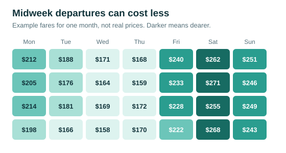

When to book cheap flights
Flight prices change constantly, so no single day guarantees the lowest fare. Flexible dates usually save more than any booking trick.
Search a whole month
Use a fare calendar and compare every departure date in the month. Midweek departures are often cheaper than Fridays and Sundays.
Count the real price
Add bag fees, seat fees and the cost of reaching a distant airport. A low headline fare can end up costing more than a full-service ticket.
Read our travel insurance guide before you pay.
